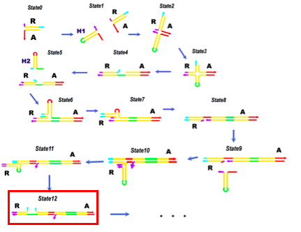
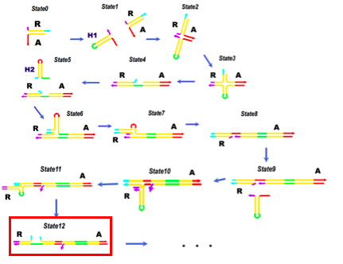

Sequence Design
Based on the design by Venkataraman et al (2007), we designed the sequence for RHCR. In order to promote the extending reaction, we have destabilized hairpin by changing "a" and "c" domains from 6 bases to 10 bases and made it more GC rich. The restriction site of nicking endonuclease Nt.BbvCI was placed inbetween the hairpin stem and the x or y domains (fig.7 &10). In addition, for the shrink reaction, toehold was added next to the a or c domains in order to release the hairpin in state P.
The obtained sequences are shown below
RH1: CCTTCAGTGAGGCGTCGAGAGGCACCGTGGCTGAGGAGCCACACCACCTCAGCCACGGTGCCTCAGCC
RH2: CAGGCCTCAGCCACGGTGCCTCTCGACGCCTCGAGGCACCGTGGCTGAGGTGGTGTGGCTTAGCGTGT
R: GGCTGAGGCACCGTGGCTGAGGCCTG
A: CCTCAGCCACGGTGCCTCTCGACGCCTC
H1rel: TCGACGCCTCACTGAAGG
H2rel: ACACGCTAAGCCACACCA
To confirm the formation of desired structures, we performed simulation by the structure prediction software NUPACK. Sequence of H1 and H2 form hairpins properly as shown in fig1 and 2. sequence A and R, which serve as crosslinking points, also have the desired structure as shown in fig3.

fig.1 H1 hairpin formation
From the left, NUPACK result, target structure, a sequence of each domain.
fig.2 H2 hairpin formation
fig.3 A-R complex formation
The hairpin monomer and A-R complex successfully form the target structure. Next, we confirm reactions in HCR.


 
